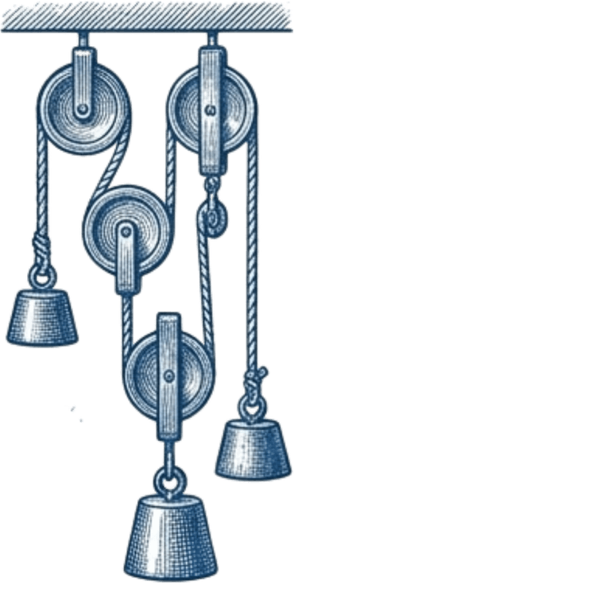

الميثاق وأخلاقيات مهنة التعليم
السجايا الحميدة والسلوكيات الفاضلة التي يتعيَّن أن يتحلى بها العاملون في حقل التعليم العام فكراً وسلوكاً أمام الله ثم أمام ولاة الأمر وأمام أنفسهم والآخرين، وتُرتَّب عليهم واجبات أخلاقية.
رحلة رقمية توثّق التعليم، التطوير، والإنجاز المهني.
تحقيق التميّز والريادة وخدمة المجتمع في إطارٍ من القيم الإسلامية، وبما يُسهم في تحقيق التنمية المستدامة.
توفير بيئة تعلّمٍ آمنة وفرصٍ متكافئة للمتعلمين؛ للحصول على تعليمٍ متميّز يمكّنهم من التفكير العلمي، وامتلاك المهارات والقيم اللازمة؛ ليكونوا مواطنين فاعلين ومساهمين في تطوير المجتمع.
تسعى الرؤية إلى رفع مستوى التحصيل العلمي لدى الطلاب من خلال تحسين جودة التعليم وتوفير بيئةٍ تعليميةٍ محفّزة.
تهدف الرؤية إلى خلق بيئةٍ تعليميةٍ تشجّع على الابتكار والإبداع، عبر تعزيز الأنشطة العلمية والفنية، وتشجيع الطلاب على التفكير خارج الصندوق.
تركّز رؤية 2030 على تطوير المهارات العلمية للطلاب من خلال التعليم المهني والتقني، إضافةً إلى تعزيز البرامج التدريبية والتطبيقية في المناهج الدراسية.
ميثاقٌ يوجّه فكر المعلّم وسلوكه — أمام الله، ثم ولاة الأمر، ثم نفسه والآخرين.
السجايا الحميدة والسلوكيات الفاضلة التي يتعيَّن أن يتحلى بها العاملون في حقل التعليم العام فكراً وسلوكاً أمام الله ثم أمام ولاة الأمر وأمام أنفسهم والآخرين، وتُرتَّب عليهم واجبات أخلاقية.
تعزيز انتماء المعلّم لرسالته ومهنته، والارتقاء بمكانته العلمية والاجتماعية، وترسيخ قيم المهنة وأخلاقياتها بما يسهم في بناء المجتمع وتقدّمه.
التعليم رسالة سامية تستمدّ أخلاقياتها من مبادئ الشريعة والحضارة، وتقوم على الإخلاص والصدق والعطاء المستمر ونشر العلم، مع اعتزاز المعلّم بمهنته والمحافظة على شرفها.
يلتزم المعلّم بالقيم والأخلاق الحميدة، ويحرص على تطوير معارفه ومهاراته باستمرار، ويتّصف بالصدق والأمانة والانضباط والتسامح، ويكون قدوةً في سلوكه، ويسهم في تعزيز المواطنة والاعتدال والتعايش.
تقوم علاقته بطلابه على الرحمة والعدل والاحترام، ويحرص على تعليمهم وتوجيههم وصون كرامتهم وتنمية شخصياتهم ومهاراتهم، ويشجّع التفكير الناقد والتعلّم الذاتي والحوار البنّاء، بعيدًا عن العنف والعقاب البدني والنفسي.
يعزّز الانتماء للدين والوطن والتفاعل الإيجابي مع الآخرين، ويحافظ على ثقة المجتمع ومكانة مهنته، ويسهم بعلمه وثقافته وفكره في تقدّم المجتمع وبناء أجياله.
يبني علاقته بزملائه وإدارة المدرسة على الثقة والاحترام والعمل بروح الفريق، ويلتزم بالأنظمة والتعليمات، ويشارك بإيجابية في أنشطة المدرسة وفعالياتها.
يُعدّ شريكًا للأسرة في التربية والتعليم، ويحرص على تعزيز التواصل والثقة بين البيت والمدرسة، والتشاور فيما يخدم مصلحة الطالب ومسيرته التعليمية.

صُمم هذا الملف ليعكس تجربة تعليمية تتطور بالملاحظة والتعلّم المستمر، ويسعدني أن يكون تقييمكم وملاحظاتكم جزءًا من هذا التطور.